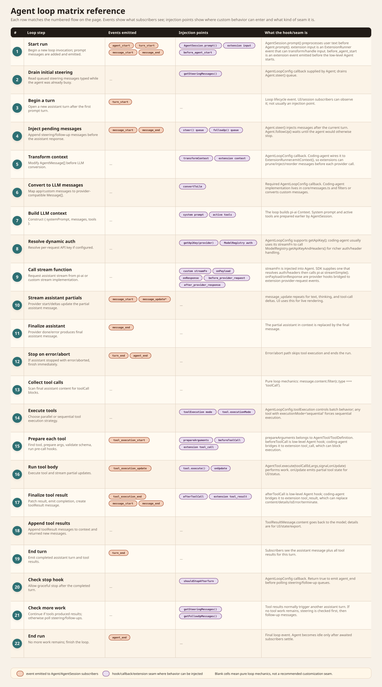

Every step in the agent loop
The loop lives in packages/agent/src/agent-loop.ts. It receives product-prepared messages and tools, speaks to an injected stream function, emits lifecycle events, executes tool calls, and decides whether to continue.
Loop entrypoints
agentLoop(prompts, context, config)
Adds new prompt messages to the current context, emits start/message events for them, then enters the shared loop.
agentLoopContinue(context, config)
Continues from existing context after tool results or retries. It refuses empty context and refuses to continue from an assistant message.
Agent.prompt()
The stateful wrapper rejects concurrent runs, creates an abort controller, marks streaming state, creates loop config, and awaits subscribers for each event.
Full turn flow
This matrix aligns with the numbered flow below: each row is one loop step, with the emitted events, the injection/customization seams, and a plain-English explanation of what each seam actually is.

- Start run. Emit
agent_start. For a new prompt, emitturn_start,message_start, andmessage_endfor each user/custom prompt message. - Drain initial steering.
getSteeringMessages()may supply messages typed while the agent was busy. - Begin a turn. Emit
turn_startexcept for the very first turn already opened by prompt handling. - Inject pending messages. Steering/follow-up messages are appended to context and emitted as normal message start/end events before the next assistant call.
- Transform context. Optional
transformContext(AgentMessage[])can prune, compact, or inject messages at the agent-message level. - Convert to LLM messages. Required
convertToLlm()filters or maps custom app messages into provider-compatibleMessage[]. - Build LLM context. The loop constructs
{ systemPrompt, messages, tools }. - Resolve dynamic auth. If
getApiKey(provider)exists, it is called for each LLM request. Coding-agent usually does richer auth in its customstreamFn. - Call stream function.
streamFn(model, context, options)returns an assistant event stream frompi-aior an injected implementation. - Stream assistant partials. On provider
start, append a partial assistant message and emitmessage_start. Text, thinking, and tool-call deltas update the partial and emitmessage_update. - Finalize assistant. On provider
doneorerror, replace the partial with the final assistant message and emitmessage_end. - Stop on error/abort. If the assistant stop reason is
errororaborted, emitturn_endwith no tool results, thenagent_end. - Collect tool calls. The final assistant content is scanned for
toolCallblocks. - Execute tools. Tool calls run in parallel by default, unless config says sequential or any selected tool has
executionMode: "sequential". - Prepare each tool. Find the matching tool, apply
prepareArguments, validate arguments against schema, and runbeforeToolCall. Missing/invalid/blocked tools become error results. - Run tool body. Call
tool.execute(toolCallId, args, signal, onUpdate).onUpdateemitstool_execution_update. - Finalize tool result. Run
afterToolCalland emittool_execution_end. Convert output into atoolResultmessage and emit its message start/end events. - Append tool results. Tool result messages are appended to context and returned new-message list in assistant source order.
- End turn. Emit
turn_endwith the assistant message and tool results. - Check stop hook.
shouldStopAfterTurn()can gracefully end after the completed turn. - Check more work. If tool calls produced results and did not all terminate, loop into another assistant turn. Otherwise poll steering, then follow-up messages.
- End run. If no tools, steering, or follow-ups remain, emit
agent_endwith the new messages.
Events emitted by the loop
Run and turn
agent_start, agent_end, turn_start, turn_end.
Messages
message_start, message_update, message_end. Assistant partials mutate during streaming; final messages replace the partial.
Tools
tool_execution_start, tool_execution_update, tool_execution_end, plus normal toolResult message events.
Tool execution details
details field is for UI/state, while content is what the model sees.Parallel execution prepares tool calls in assistant order, then runs allowed calls concurrently. Completion events can arrive in completion order, but persisted tool-result messages are emitted afterward in the assistant's original tool-call order. Sequential mode runs prepare/execute/finalize/message for each call before the next.
Where coding-agent hooks in
AgentSessionsuppliestransformContextthrough extension context hooks.packages/coding-agent/src/core/messages.tssuppliesconvertToLlmfor custom message types such as bash executions and branch/compaction summaries.AgentSessionmaps low-level tool hooks to extensiontool_callandtool_resultevents.- The SDK supplies a custom
streamFnthat resolves auth/headers throughModelRegistrybefore callingpi-ai streamSimple.
Source landmarks
packages/agent/src/agent-loop.ts— low-level loop and tool execution.packages/agent/src/agent.ts— stateful wrapper, queues, lifecycle, subscribers.packages/agent/src/types.ts— loop config, events, tool contracts.packages/coding-agent/src/core/agent-session.ts— product hooks around the loop.packages/coding-agent/src/core/messages.ts— custom message conversion.